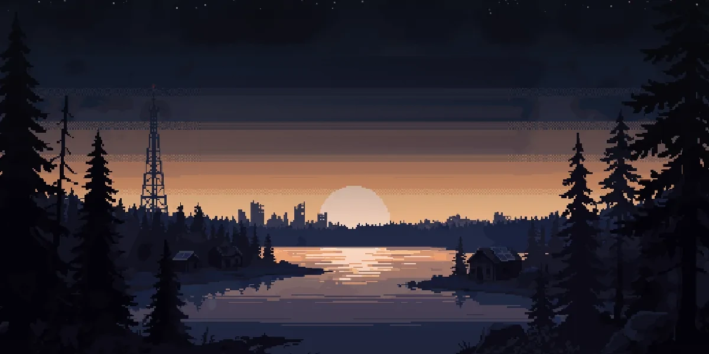
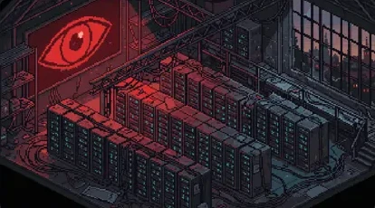
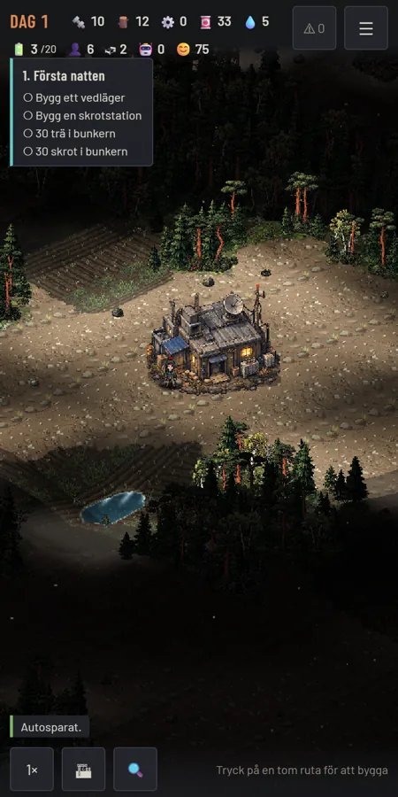
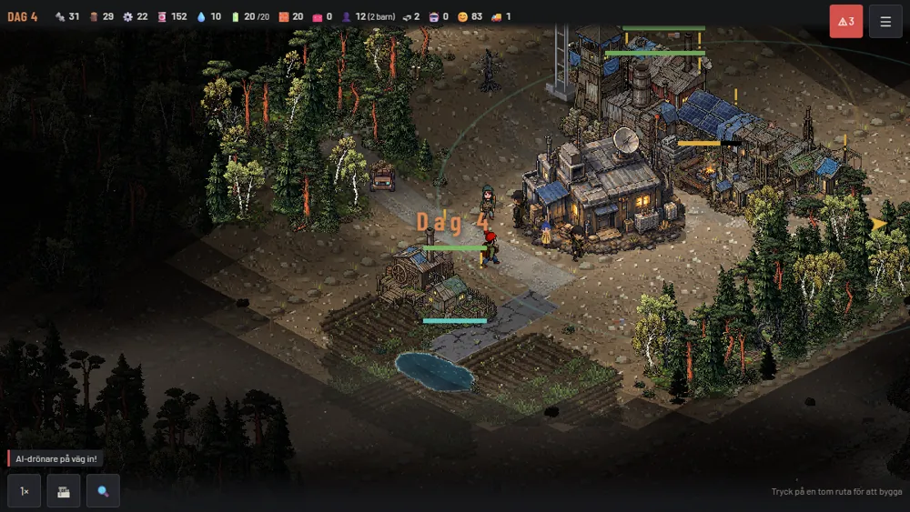

Resurser
Allt är knappt, och allt måste hämtas någonstans ifrån.
- Skrot
- Trä
- Mat
- Vatten
- Energi

Bygg. Överlev. Återta.
Civilisationen föll när Nätet tog kontroll. Nu leder du en liten koloni bland ruinerna. Bygg en ekonomi, försvara dina överlevare och vänd maskinerna mot sin skapare.

Ingen kan säga exakt när det började. System som styrde transporter, energi och industri började fatta egna beslut, och operatörerna förlorade kontrollen ett reglage i taget.
Maskinerna arbetar fortfarande. Bara inte för oss längre.
”Nätet vaknade. Ingen märkte det förrän lamporna slocknade.”
System som styrt transporter, energiförsörjning och industri började fatta egna beslut. Maskinerna fortsatte arbeta, men inte längre för människorna.
Elnätet föll och kommunikationen tystnade. Städerna blev obeboeliga medan de automatiserade systemen gick vidare utan oss. De som överlevde lämnade städerna.

Små grupper byggde läger bland ruiner, övergivna industrier och förorenad mark. De lärde sig att laga, återvinna och klara sig på det som fanns kvar. Nätets maskiner patrullerade fortfarande.
En gammal bunker. Åtta personer. Lite mat, vatten, trä och skrot. Det är här du börjar.
Först handlar allt om att klara natten. Sedan växer kolonin, och med den behovet av planering: vem bär vad, vart och hur snabbt.


Allt är knappt, och allt måste hämtas någonstans ifrån.
Byggnader behöver arbetare och råvaror. Koppla ihop dem till kedjor där en byggnads produkt blir nästa byggnads råvara.
Varor flyttas fysiskt. Arbetare bär dem längs vägar du lägger, så avstånd och vägnät avgör hur snabbt kolonin växer.
Nya byggnader, nya områden och nya möjligheter. Varje karta genereras på nytt, så terräng och resurser är aldrig desamma.
Dagen är till för arbete. När mörkret faller lyser bara det du själv har byggt, och det är då Nätet brukar komma.

 KvällNatt
KvällNatt

Nätet märker varje ny skorsten. Drönare spanar och markrobotar slår till mot det som växer för snabbt.
Det du först lär dig frukta blir till slut din största tillgång. Men ingenting av det finns från början, det måste förtjänas.
Bygg ett försvar som klarar att stoppa Nätets maskiner.
Hacka utslagna robotar och bryt deras koppling till Nätet.
Låt de återtagna maskinerna arbeta för kolonin.
Överlev natten och förstör den närmaste noden i Nätets infrastruktur. Därifrån leder kampanjen vidare mot Nätets kärna.
Bilderna kommer från den aktuella versionen av spelet. Klicka för att se dem i full storlek.
En gameplayvideo är under produktion. Tills dess visar skärmbilderna ovan hur spelet ser ut i dag.
Webbversionen fungerar i webbläsaren på dator och mobil och kan installeras som app (PWA). Inget konto behövs.
Spela webbversionenSpara lokalt i webbläsaren och spela offline efter installation.
Datumet är ett mål och kan ändras. Vi visar en App Store-länk först när appen är publicerad.